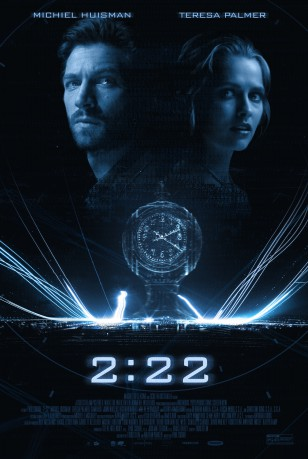

#7482 2:22 - Zeit für die Liebe
Alternativ: 2:22
 
 IMDB-Wertung: 5.7 / 10
IMDB-Wertung: 5.7 / 10  Metascore: 0
Metascore: 0 
A clever, roller-coaster thriller that centers on Dylan an air traffic controller who is given a jolt when he narrowly escapes being responsible for a mid air collision between two passenger planes. Caused by a mysterious blinding light that happened at 2:22, these strange occurrences continue and lead Dylan to meet Sarah, with whom he feels inexplicably linked. Together the two discover uncanny similarities with their current predicament and a double murder committed a generation ago. With a grim fate looming, Dylan must solve the mystery of 2:22 to preserve a love whose second chance has finally come.
Jahr: 2017
Dauer: 99 Minuten
FSK: 12
Land: USA Studio: Magnet ReleasingTonspuren: DTS - ,
Untertitel: Deutsch,
Auflösung: 1080p (1920x804) Größe: 6522 MB
Genre: Action, Thriller
Regisseur: Paul Currie
Drehbuch: Todd Stein
Soundtrack:
Darsteller:
 Teresa Palmer als Sarah
Teresa Palmer als Sarah Michiel Huisman als Dylan
Michiel Huisman als Dylan Sam Reid als Jonas
Sam Reid als Jonas- Maeve Dermody als Sandy
- Remy Hii als Benny
 Simone Kessell als Serena
Simone Kessell als Serena- Marisa Lamonica als Commuter
- John Waters als Bill
- Kerry Armstrong als Catherine
- Carma Sharon als Restaurant Patron
- Jessica Clarke als Evelyn
- Angie Tricker als Commuter
- Katie McConnell als School Teacher
- Ezekiel Simat als Attractive Socialite
- Jean-Pierre Yerma als Businessman
- Marek Radin als Bike Messenger
- Mitchell Butel als Howard Pace
- Dean Kyrwood als Jeff Eggby
- Zara Michales als Ellie
- Jack Ellis als Noah Marks
- Michael-Anthony Taylor als Ticket Attendant - Grand Central Station
- Morrison James als Ticket Booth Attendant - Grand Central Station
- Amanda Azarian als Neighbor
- Erica Long als New York Businesswoman
- Gordon Waddell als Ed Full
- Shameer Birges als Cab driver
- Madison McKoy als Crash Site Man
- Emanuele Avezzano als Passerby , uncredited
- Nick Barker-Pendree als Airline Pilot , uncredited
- Gemma Dart als New Yorker , uncredited
- Tian Wang als Astrophysicist , uncredited
 Richard Davies als Inky
Richard Davies als Inky- Nancy Denis als Regina Jones
- George Papura als New York Tradesman
- Nora Sommerkamp als Casual Woman / Hip Gallery Visitor
- Duncan Ragg als Jake Redman, 1985
- Melissa Joyce als Waitress
- Jeremy Costello als Train Commuter
- Sidney Beitz als New Yorker
- James Parbery als Newspaper Man
- Harry Peek als Businessman
- Saliyl Dotson als Passerby
- Jeff Hudson als Airline Passenger
- Kanwal Baluch als Girl in Central Station
- Paulina Hopkins als Airline Passenger
- Jennieka Chattelle als Flight Attendant
- James Trimboli als Civilian , uncredited
- Mike Zarate als New Yorker , uncredited
Datei: X:\2017(A-F)\222 - Zeit für die Liebe (2017, FSK12, 1920x804).mkv seit 15.11.2017
Festplatte: HD 2017(A-Z)-2018(A-F)
 Es gibt insgesamt 152 Filme in der Gruppe '2017(A-F)'
Es gibt insgesamt 152 Filme in der Gruppe '2017(A-F)'